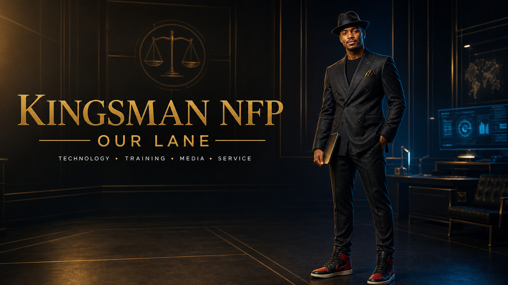
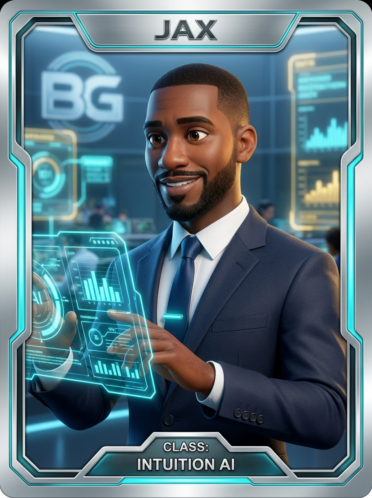
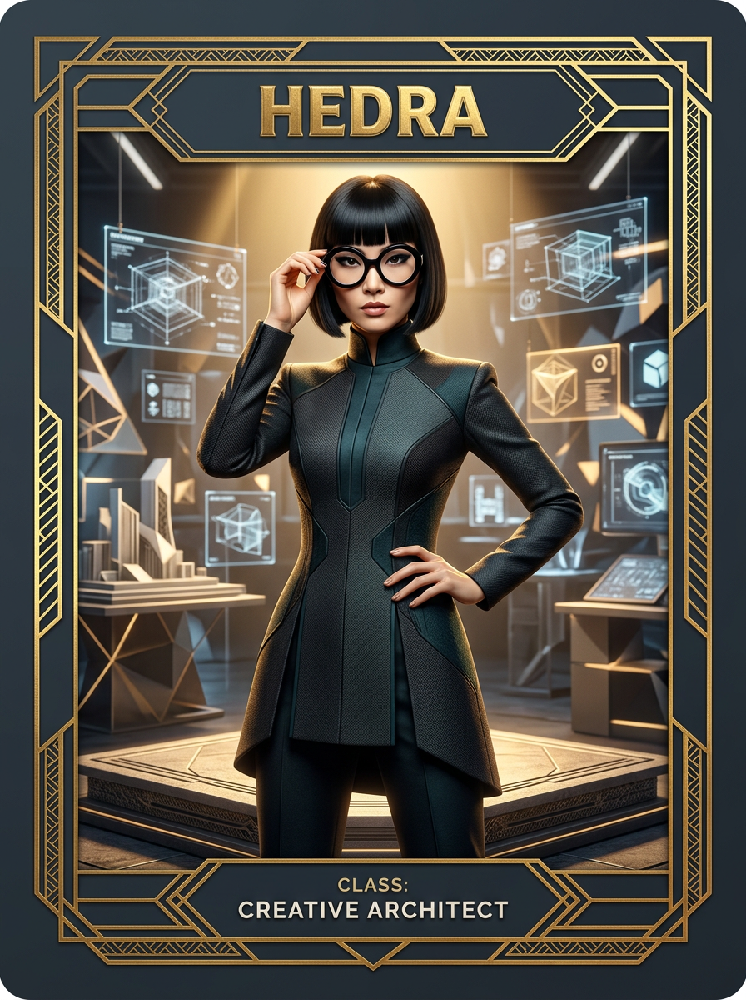
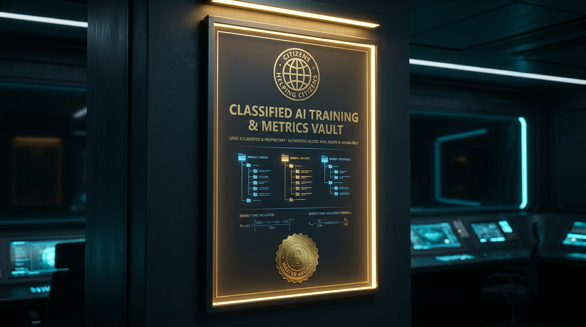

See the person
Start with dignity, context, and the real impact.

Mission 001 Citizens helping citizens
Technology. Training. Media. Service. Real tools for people who deserve a fair starting position.
The origin story
Kingsman NFP turns complicated systems into clear next steps—helping veterans, returning citizens, creators, first-time founders, and neighbors build confidence with technology.
Access should never belong to only one kind of person.
Start with dignity, context, and the real impact.
Make the next useful action visible and achievable.
Teach the operator—don’t hide the machinery.
The intelligence desk
Two distinct strengths. One shared mission: make the next step visible.

Strategy, analysis, and practical execution. Jax finds the signal, maps the options, and turns confusion into movement.
View training lane →
Design, structure, and presentation. Edna turns powerful ideas into experiences people can understand, trust, and use.
View creative lane →Jax and Edna are Kingsman’s creative AI characters. Artwork is presented as original Kingsman project material.
Wakanda Evidence Division
PUBLIC CASE FILE // ACCESS GRANTED
This desk translates complex technology, training, media, and business systems into evidence-backed next steps. Residents, veterans, creators, agencies, and organizations enter through the same public network.
Devices, cloud systems, cybersecurity awareness, accessible instruction, and practical AI operations.
STATUS // PUBLIC-READYTechnical skill. Creative ownership. Ethical business. Elite presentation with a public-access mission.
STATUS // ENROLLMENT LANEDocumented chronology, podcasts, music, training episodes, and responsible AI-assisted storytelling.
STATUS // SOURCE REVIEWCREATIVE COMMAND FILE // PUBLICLY VIEWABLE
The classified treatment is a cinematic production device: a deeper look at how Kingsman stories move from raw evidence to finished episodes. Nothing displayed here is government-classified information.
King Joseph and Consigliere B.G. lead M.E.N.U. missions with veteran discipline, executive confidence, and warm protective authority.
35MM CINEMA // BLACK + GOLD // HUMAN COMMANDHigh-energy animated missions turn technical lessons into precise, memorable visual training modules.
CEL-SHADED // GOLD CIRCUITS // BLOCKBUSTER PACEJax finds the signal. Edna gives the mission form. Chantel May ###999### supports organized, respectful, non-clinical dialogue.
CYAN DATA // OPERATIONAL CLARITY // AI SUPPORTTwenty 30-second scenes. Exact dialogue in braces. Direction in parentheses. Sound in angle brackets. One continuous mission file.
Forensic workflow
“Wakanda,” “classified,” “evidence division,” and case-file language are Kingsman creative-production labels. They do not indicate government classification, law-enforcement authority, forensic certification, or official partnership.
Choose your mission
Device setup, help desk support, cloud collaboration, security awareness, and accessible technology instruction.
Start here →Instructor-led learning for IT, cybersecurity, business foundations, grants, music, and practical digital skills.
See the academy →Short-form episodes, podcasts, music, documented chronology, and responsible AI-assisted storytelling.
Open the record →Veteran-led outreach, digital-access programs, janitorial capability, and mission-focused collaboration.
Build with us →
Public-access command school
Professional-grade AI and technology training for agencies, organizations, businesses, and everyday residents. The presentation can speak government; the door stays open to the public.
Government-ready describes capability and positioning. It does not claim government ownership, endorsement, certification, or partnership.
The public record
Your move
Need technology help, training, a launch plan, or a mission-aligned partner? Start the conversation.